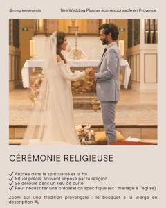
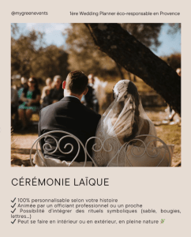

Mariage en vue ? Parmi les premières grandes décisions à prendre figure le choix du type de cérémonie. Traditionnelle ou personnalisée ? Spirituelle ou symbolique ? Entre cérémonie religieuse et cérémonie laïque, les futurs mariés peuvent parfois hésiter. Faisons le point pour vous aider à y voir plus clair.
La cérémonie religieuse : un ancrage dans la tradition

La cérémonie religieuse s’inscrit dans une tradition spirituelle, souvent liée à la foi d’un ou des deux membres du couple.
Les avantages :
- Un cadre symbolique fort, porteur de valeurs et de rites ancestraux.
- Un accompagnement spirituel qui donne du sens à l’engagement pour les croyants.
- Un lieu de célébration dédié, comme une église, une mosquée ou une synagogue, avec un officiant reconnu par la communauté.
À prendre en compte :
- Il faut être marié civilement avant.
- Les contraintes de préparation : parcours de foi, démarches spécifiques, choix du lieu imposé.
- Une structure souvent figée, avec moins de liberté sur les textes, musiques et intervenants.
- Dans certains cas, il faut être baptisé.
Zoom sur le rituel du bouquet à la Vierge : une tradition provençale encore vivace
En Provence, il est encore courant que les mariées catholiques participent au rituel du bouquet à la Vierge, à la fin de la cérémonie religieuse. Ce geste symbolique consiste à déposer son bouquet de mariée (ou un petit bouquet spécifique préparé pour l’occasion) devant une statue de la Vierge Marie, souvent située dans l’église. Il s’agit donc d’un moment empreint de recueillement et de spiritualité, qui permet à la mariée de confier son union à la protection de la Vierge, en y associant parfois une prière personnelle ou une intention pour le couple. Ce rituel peut aussi être revisité dans une démarche plus symbolique ou culturelle, même pour les couples non pratiquants, en hommage aux traditions locales ou à un héritage familial cher.
La cérémonie laïque : liberté, créativité et émotions

La cérémonie laïque, aussi appelée cérémonie d’engagement, est une célébration symbolique sans valeur religieuse ni légale, qui peut avoir lieu partout (en extérieur, dans un domaine, dans un lieu insolite).
Les avantages :
- Une totale liberté : vous choisissez les textes, les musiques, le lieu, l’officiant, et le ton de la cérémonie.
- Une dimension très émotionnelle, souvent plus personnalisée et centrée sur le couple et ses valeurs.
- Accessible à tous : couples de même sexe, non-croyants, familles recomposées…
À prendre en compte :
- Ce n’est ni un mariage légal, ni religieux : il faut donc passer à la mairie pour que le mariage soit reconnu.
- Elle demande une vraie préparation pour qu’elle soit fluide, touchante et bien rythmée (d’où l’intérêt d’un officiant professionnel comme A2mainstenant).
Comment choisir entre cérémonie laïque et cérémonie religieuse ?
Voici quelques pistes de réflexion pour faire un choix éclairé :
- Vos croyances : êtes-vous attaché(e) à une religion ? Est-ce important pour vous ou vos familles ?
- Votre vision du mariage : recherchez-vous un cadre solennel ou une cérémonie à votre image ?
- Votre liberté de création : souhaitez-vous écrire vos vœux, choisir vos rituels, inclure vos proches ?
- Vos contraintes logistiques : certaines religions imposent des lieux précis ou des démarches longues.
Et bien sûr, rien n’empêche de combiner les deux : un mariage civil, une cérémonie religieuse intime, puis une cérémonie laïque plus ouverte et festive.
En résumé
| Critère | Cérémonie religieuse | Cérémonie laïque |
|---|---|---|
| Reconnaissance officielle | Spirituelle | Symbolique, sans cadre religieux |
| Liberté de personnalisation | Limitée | Totale |
| Préparation | Encadrée par l’institution religieuse | À organiser librement ou avec un pro |
| Officiant | Représentant religieux | Ami, proche ou officiant professionnel |
| Lieu | Lieu de culte | Partout : nature, domaine, jardin… |
Le mot de Coralie : « Et si on s’affranchissait des cases ? »
Chez My Green Event, je vous accompagne avec bienveillance et sans dogme, que vous choisissiez une cérémonie religieuse ou une cérémonie laïque. Mon objectif : vous aider à organiser une célébration cohérente avec vos valeurs, votre histoire et vos envies.
Vous rêvez d’une cérémonie laïque simple, touchante, et éco-responsable ?
Je peux vous fournir des ressources utiles, des pistes de structure, des exemples de rituels symboliques, et des conseils concrets pour que vous puissiez créer votre cérémonie sur-mesure, à votre rythme et en toute autonomie. Et cela gratuitement avec l’un de mes accompagnements A à Z ou coordination Jour J !
Envie de discuter de votre cérémonie idéale ? Contactez-moi ici pour en parler ensemble. Je serais ravie de vous guider vers une célébration qui vous ressemble vraiment.